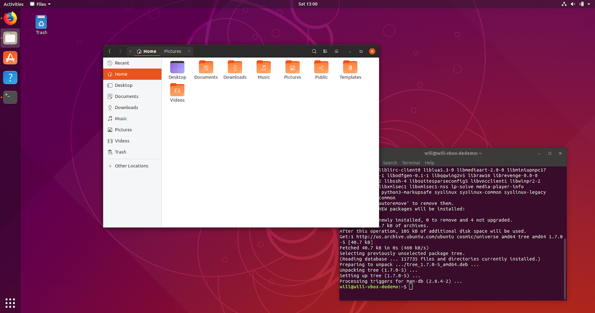

About this site
Welcome to this small little thing I am writing!
Here, you will find mostly miscellaneous tech advice and no-nonsense guides to doing things in Linux. I might also rant on here. Who knows?
This site is also open to pull requests. If you have some nifty advice about Linux, submit a pull request!
Additionally, I'll probably put some neat-o project sites on here. It'll be great!
Guides
Ahh! Thunar won't automount stuff!
27 November, 2018
Didja hit it with a
sudo pacman -S gvfs
? Should work after that.
Pimp my DE seminar notes
5 November, 2018
I recently gave a seminar on the basics of desktop environment (DE) customization at Computer Science House. I discussed how to customize your GNOME, KDE, and XFCE environments and where to get new themes, icons, and fonts. The talk started with
What is a DE?Desktop Environments are graphical interfaces that make it easier for people to interface with computers. If you've used a computer in the last 20 years, you've used a DE. DEs usually come with a window manager, normally either floating (The windows can move around detached from everything and will float over each other and behind each other) or tiling (The windows take up the entire screen and typically can't overlap except in tabbed mode). This allows you to multitask in an easy-to-understand way. A DE also usually has "widgets" that let you manage apps, power, wifi, sound, and desktop space more effectively. Typically, a DE will have a dock or a task bar that will display running processes as well as favorites, a system tray for getting info about your network status, battery status, audio status, time, CPU load, disk usage, RAM usage, and pretty much any other statistic you want about your computer.
Finally, a DE will sometimes (depending on your install) have apps like a graphical file manager, web browser, text editor, settings manager, photo viewer, archiving tool, etc etc etc. that let users do command line things on not the command line.
Which DE should I use?The three most common DEs for newbies and experienced users alike are GNOME, KDE, and XFCE.
GNOME
The one most newbies use because it comes with Ubuntu and Fedora by default. It's simple (on the surface), pretty stable, and easy to learn coming from Windows or macOS.
- Already kinda pretty
- Pretty good looking nowadays (it used to be hideous)
- Uses plugins for customization
- Heavy
- Getting Lighter
- Very actively developed (Since 1999)
- Not good with older hardware
KDE

KDE is a nice DE that isn't as heavy as GNOME and operates similarly to Windows, so it's good for those looking to transition. It customizes in a very different way from GNOME, but it still has robust customization options, utilizing modular and configurable panels that can be used in almost any way. It's also actively developed by several different communities.
- Lighter weight(tm) than GNOME
- Similar to Windows
- REALLY good widget support
- Actively developed (Since 1996)
- Looks the most modern (arguably)
- Sometimes weird theming
XFCE

XFCE is the lightest weight of these DEs. It's pretty old, too, and has a smaller development team. It's highly configurable boasting a robust and decently stable™ panel system. The panels work like KDE's panels, but with more direct customization and fewer animations. If you want your environment to look good without killing your CPU, this is the DE for you.
- Lightest weight (of the three here.)
- Most customizable
- Easiest to customize
- Lots of small weird bugs
- Old (Released in 1996)
- Small dev team
Of course, there are others like i3, AwesomeWM, and Openbox, but those can be difficult to configure, and were not covered in my seminar. So that's about it for now. See ya!
Useful links:
For getting GNOME stuff: gnome-look.org and extensions.gnome.org. The former will get you desktop themes, fonts, icons, and backgrounds, and the latter will get you additional functionality like better window paneling, different ways to manage desktops, widgets, dock customizations, and more.
For getting KDE stuff: You can use the “Get more
For getting XFCE stuff: You can go to, you guessed it, xfce-look.org. It's got all the things that the other two sites I mentioned have.
How to install Bumblebee on Arch
29 October, 2018
Do this after installing Xorg but before installing a DE. The next time I install Arch I'll actually blog about it properly but this is something that might be useful real quick. Also, if you're trying to install Bumblebee on any other flavor,
don't.
sudo pacman -S bumblebee mesa xf86-video-intel lib32-virtualgl lib32-nvidia-utils
sudo gpasswd -a $USER bumblebee
sudo systemctl enable bumblebee
How to set up networking on an uncooperative CLI
29 October, 2018
So, if you have something like a ThinkPad X380 Yoga (or like, any of the newer, thiner ThinkPads) that has something like a proprietary Ethernet port or no network port at all then here's how you set up networking and get your hardware pinging the internet on a bare Ubuntu (or not) install.
First, you need to add the device to
/etc/network
Add the device to your `interfaces` file which might look something like this:
# This file describes the network interfaces available on your system
# and how to activate them. For more information, see interfaces(5).
source /etc/network/interfaces.d/*
# The loopback network interface
auto lo
iface lo inet loopback
You will need to find the device name using
ifconfig -a
and then add the device to this like this:
iface *DEVICE NAME* inet dhcp
Then, you will need to hit it with an
ifdown *DEVICE NAME*
and then an
ifup *DEVICE NAME*
and then, assuming the divine forces will actually allow it, you should be able to network!